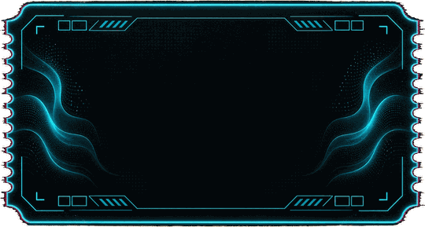
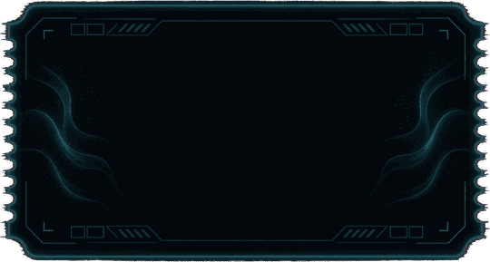
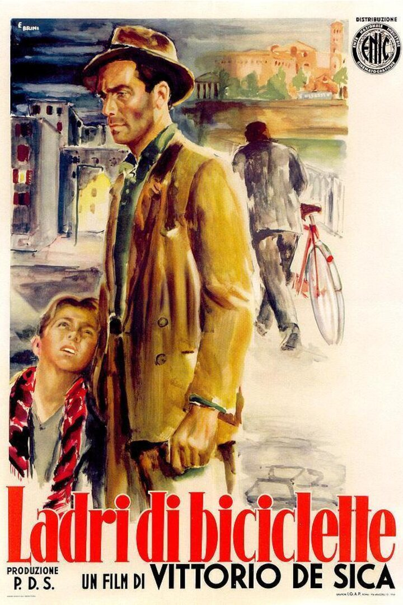
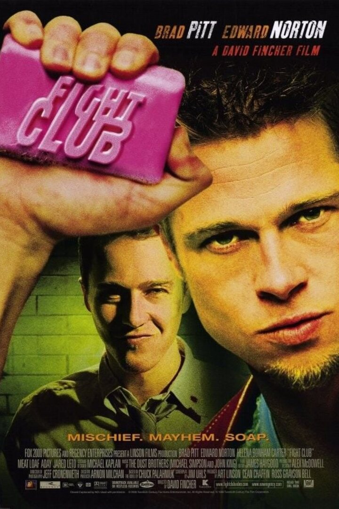
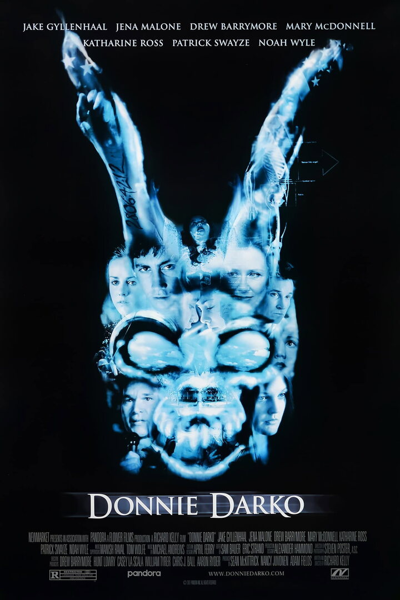

Un mar de cine · estrenos y clásicos

¡Estreno este viernes!

Introduciendo la VOSE película de la semana con estrenos y clásicos seleccionados.

En la Roma de la posguerra, Antonio, un obrero en paro, consigue un sencillo trabajo pegando carteles a condición de que posea una bicicleta. De ese modo, a duras penas consigue comprarse una, pero en su primer día de trabajo se la roban. Es así como comienza toda la aventura de Antonio junto con su hijo Bruno por recuperar su bicicleta mientras su esposa María espera en casa junto con su otro hijo.

Un joven hastiado de su gris y monótona vida lucha contra el insomnio. En un viaje en avión conoce a un carismático vendedor de jabón que sostiene una teoría muy particular: el perfeccionismo es cosa de gentes débiles; sólo la autodestrucción hace que la vida merezca la pena. Ambos deciden entonces fundar un club secreto de lucha, donde poder descargar sus frustaciones y su ira, que tendrá un éxito arrollador.

Donnie es un chico americano dotado de gran inteligencia e imaginación. Tras escapar milagrosamente de una muerte casi segura, comienza a sufrir alucinaciones que lo llevan a actuar como nunca hubiera imaginado y a descubrir un mundo insólito a su alrededor.
| Película | Viernes | Sábado | Domingo |
|---|---|---|---|
| Martes, día del espectador: 4 € | |||
| El ladrón de bicicletas | Viernes 20:00 | Sábado 20:30 | Domingo 21:00 |
| El club de la lucha | Viernes 19:30 | Sábado 20:00 | Domingo 20:30 |
| Donnie Darko | Viernes 21:00 | Sábado 21:30 | Domingo 22:00 |